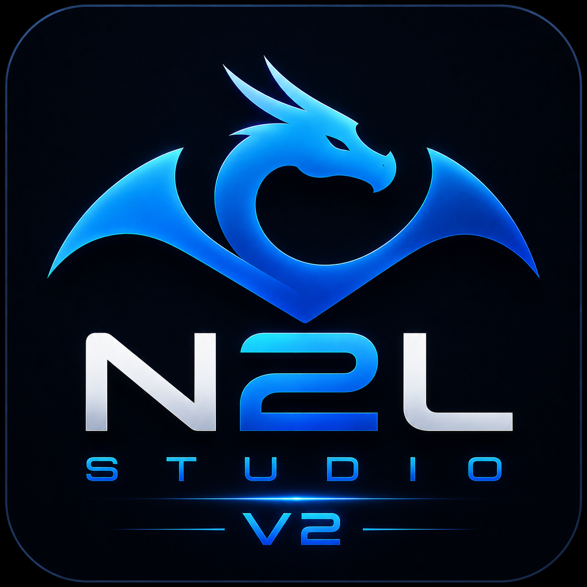
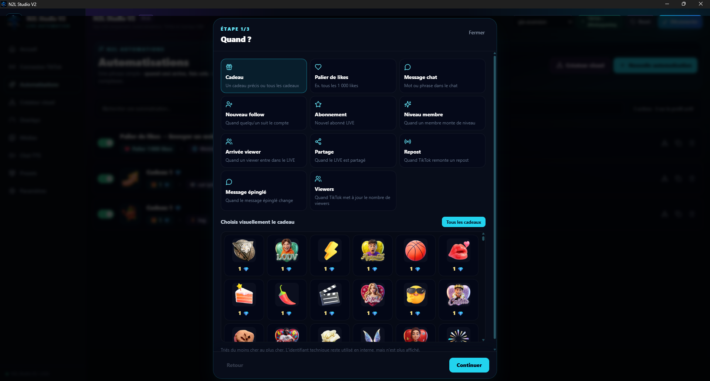
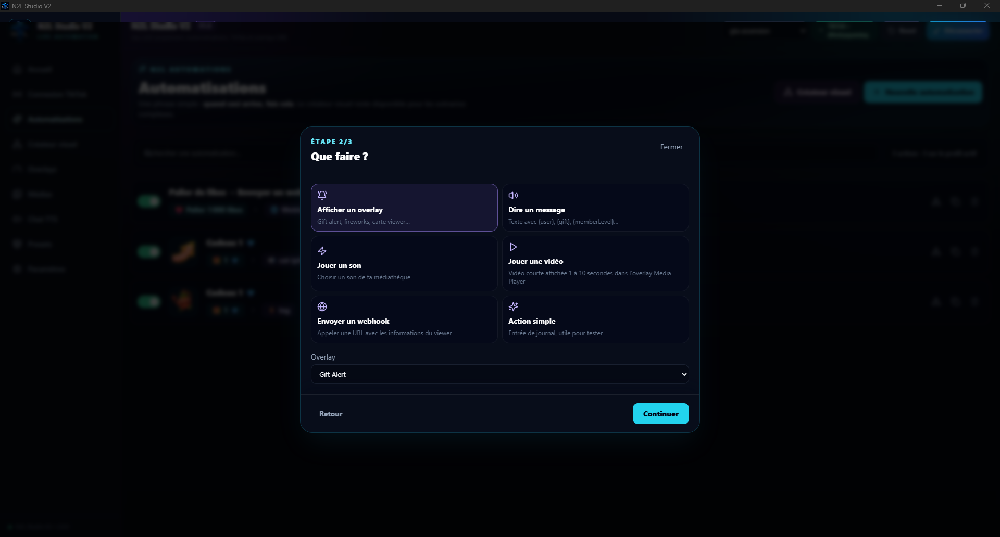
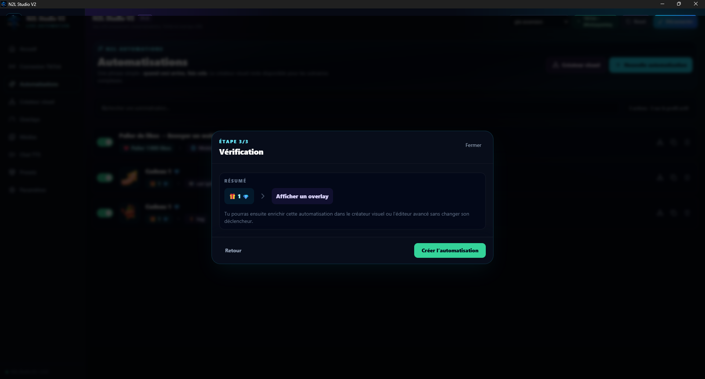

Quand ?
Choisissez le déclencheur : cadeau, palier de likes, message chat, follow, abonnement, niveau membre, arrivée viewer, partage, repost ou changement du nombre de viewers.

Créez une automatisation en quelques étapes, puis affinez-la selon vos besoins.
Cette nouvelle version de N2L Studio introduit un créateur d'automatisations plus guidé : choisissez d'abord ce qui déclenche l'action, sélectionnez ensuite ce que le logiciel doit faire, puis vérifiez le résumé avant de créer l'automatisation.
Le parcours est découpé en trois étapes pour garder une configuration lisible, même lorsque les automatisations deviennent plus nombreuses.
Choisissez le déclencheur : cadeau, palier de likes, message chat, follow, abonnement, niveau membre, arrivée viewer, partage, repost ou changement du nombre de viewers.
Affichez un overlay, lisez un message, jouez un son ou une vidéo, envoyez un webhook ou utilisez une action simple.
Un résumé confirme le déclencheur et l'action avant la création, puis l'automatisation peut être enrichie dans les outils avancés.
La V2 ajoute des overlays utilisables directement comme actions afin d'afficher des alertes et éléments visuels pendant le LIVE.
Les captures ci-dessous proviennent directement de N2L Studio V2 et montrent le parcours de création en trois étapes.



N2L Studio V2 est utilisable dès maintenant, mais reste une version bêta. Certaines fonctions peuvent encore changer, être améliorées ou présenter des bugs.
Vous pouvez télécharger des effets sonores sur Myinstants puis les importer dans N2L Studio V2 pour les utiliser avec vos déclencheurs.
Vos retours peuvent aider à améliorer cette version pendant la bêta. Vous pouvez me contacter directement par e-mail.
La bêta est développée sur mon temps libre. Le soutien PayPal reste entièrement facultatif.